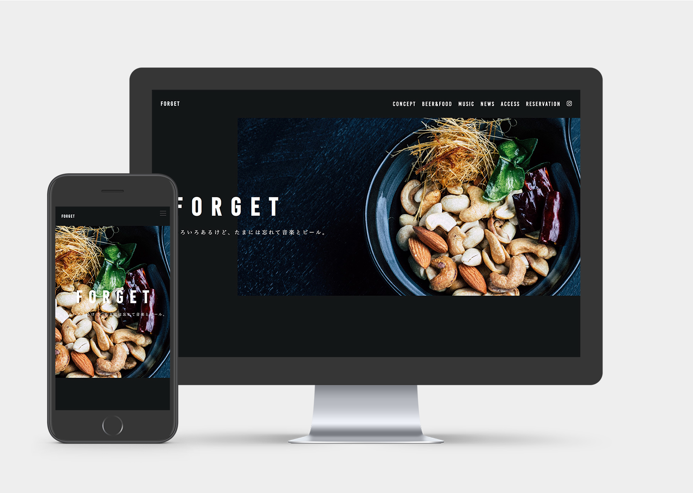
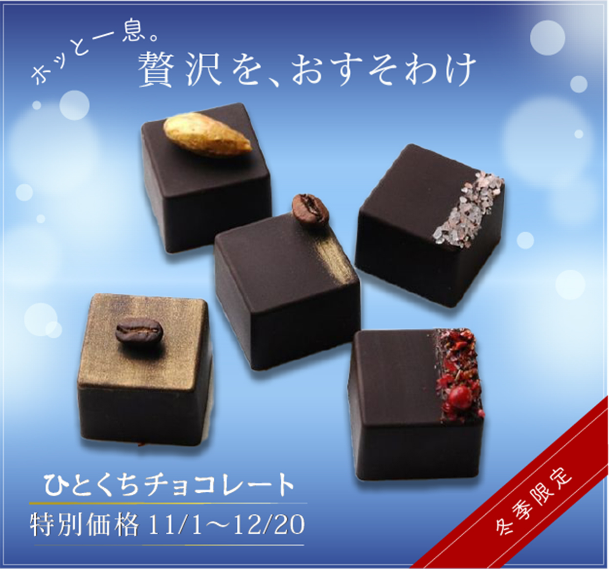
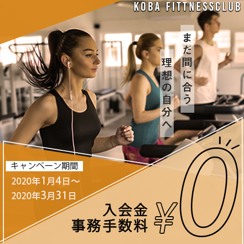
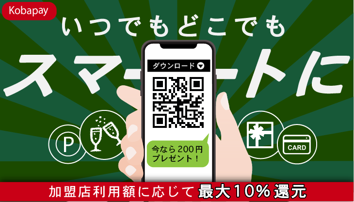

WEB SITE

link
- 概要
- クラフトビールとBGMに拘った居酒屋
- コンセプト
- 音楽好きやビール好きがふらっと気軽に立ち寄れる空間
- ターゲット
- フェスやキャンプが好きだったが、仕事や結婚で趣味の時間が割きずらくなってきた20代後半～30代男性
- デザインの理由
- 黒背景、太め欧文フォントを使用することで男性的な印象に。和文フォントは明朝体で字間をゆったりとり落ち着いた雰囲気を意識。TOP画像はお店の雰囲気が掴みやすいよう複数の写真を使用
- 制作プロセス
- コンセプト検討→ギャラリーサイトや参考書で男性向けサイト、飲食店サイトを分析→デザインカンプ作成→コーディング
- 制作時間
- デザインカンプ作成（8日間）コーディング（12日間）
- 使用ソフト
- Ps/Brackets
- 学び
- ゼロからのコーディングをしてみて、正確なデザインカンプの作成がコーディングのしやすさに繋がることを実感した。CSSは、Sassを使用して効率的にマークアップすべきであったと反省。
BANNER
after
before
- 概要
- 冬限定一口チョコ
- コンセプト
- 冬限定の一口チョコで今だけお買い得
- ターゲット
- 20〜40代の働く男女
- デザインの理由
- ターゲット層はある程度お金に余裕があると考え、特別価格であることより“贅沢ができる”ことを強調。男性でも目が向くよう青のグラデーション。雪の結晶以外で冬を表現。“ひとくちチョコレート”はスムーズツールを使いチョコのとろける食感を表現。
- 制作プロセス
- 要素の優先順位検討→Pinterstで同ジャンルのバナー検索→素材収集→バナー作成→feeputに投稿後ブラッシュアップ
- 制作時間
- 3日間
- 使用ソフト
- Ps/Ai
- 学び
- モノクロにした際に明暗がはっきりする色使いにすることで、見易いデザインになる。バナーサイズでも読めるフォントサイズを使用する。

- 概要
- 温泉旅館3大特典アピール
- コンセプト
- 通常価格より10％オフ、夕食時1ドリンク無料、遅めチェックアウト
- ターゲット
- 30〜40代カップル
- デザインの理由
- 旅行内容をイメージしやすいよう複数の素材を使用。特典内容が目に止まりやすいようなフォントサイズと余白を意識。菱形の素材や落ち着いた配色で和の印象に。
- 制作プロセス
- 要素の優先順位検討→Pinterstで同ジャンルのバナー検索→素材収集→バナー作成→feeputに投稿後ブラッシュアップ
- 制作時間
- 4日間
- 使用ソフト
- Ps/Ai
- 学び
- バナー作成では情報の正しい取捨選択をして、シンプルな見せ方をすると目に止まりやすい。旅行系のバナーでは複数の素材を使い、ターゲットにイメージさせるよう促す傾向がある。

- 概要
- フィットネスクラブのキャンペーンを推進
- コンセプト
- 冬→春まで使えるキャンペーン
- ターゲット
- 運動不足な30代〜40代社会人
- デザインの理由
- 冬から春まで使い回すということで、季節感は抑え目に。気軽感を演出するために0円は色抜き。男女共に誘導できるよう男性も映った素材を使用。
- 制作プロセス
- 要素の優先順位検討→Pinterstで同ジャンルのバナー検索→素材収集→バナー作成
- 制作時間
- 1日
- 使用ソフト
- Ps/Ai
- 学び
- スポーツ系のバナーは傾斜、直線的なモチーフを使用し勢いを感じさせるデザインが多い。

- 概要
- クリスマス商戦を狙いアプリ利用促進
- コンセプト
- アプリをダウンロードで200円プレゼント。更に加盟店利用額に応じて最大10%還元。QRコードを付けてアプリストアへ移動。
- デザインの理由
- クリスマス商戦ということで、「デートでスマートに」をイメージ。“スマートに”は傾斜をつけてスピード感のある印象に。
- 制作プロセス
- 要素の優先順位検討→Pinterstで同ジャンルのバナー検索→素材収集→バナー作成
- 制作時間
- 1日
- 使用ソフト
- Ps/Ai
- 学び
- あああああああああああ